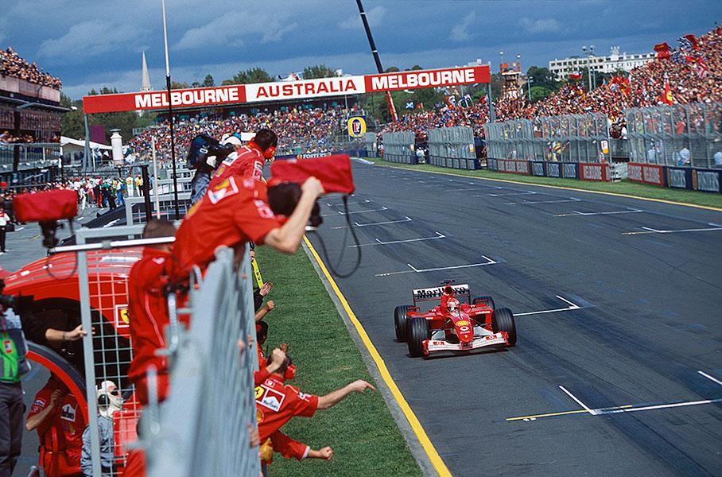
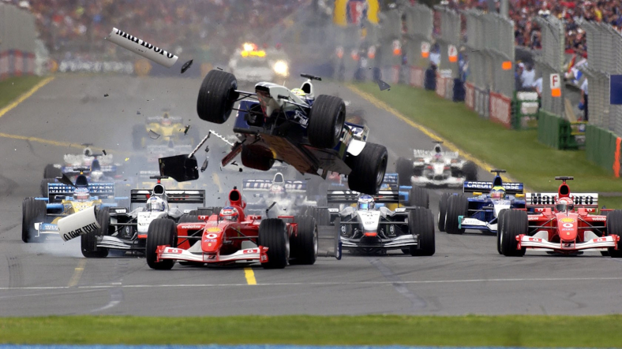
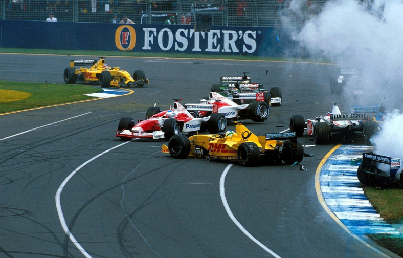
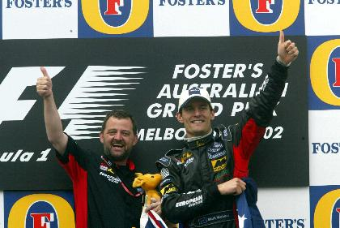
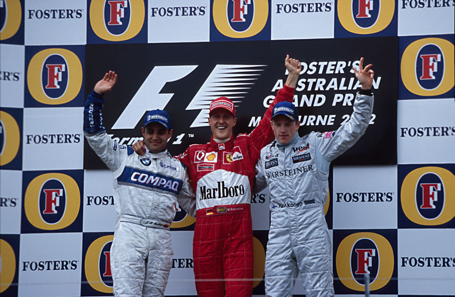

CARRO VELHO, NOVA VITÓRIA

Ferrari começa a temporada com o carro de 2001 e Schumacher vence a prova de abertura do mundial:
[AUTOR AQUI]
O velho derrotou o novo na Austrália, na abertura do Mundial 2002 de Fórmula 1. Michael Schumacher, veterano de 11 temporadas, com a Ferrari de 2001, não encontrou grande resistência dos novatos Juan Pablo Montoya e Kimi Raikkonen, pilotos que o acompanharam no pódio após uma hora e meia de corrida com seus carros novinhos em folha. O alemão chegou à 54a vitória de sua carreira tendo o trabalho de fazer apenas uma ultrapassagem difícil, sobre Montoya, na 17º volta da prova. Sua tarefa já havia sido muito facilitada na largada, com um acidente rocambolesco causado por Ralf Schumacher que teve como consequência nada menos do que oito carros envolvidos, entre eles o do pole Rubens Barrichello, o único que poderia arranhar o favoritismo de Schumacher, e o do estreante Felipe Massa, uma das atrações da prova. Ralf acertou a traseira do brasileiro na largada, no terceiro incidente entre os dois em menos de um ano. Muitos dos que vinham atrás conseguiram desviar, mas Nick Heidfeld se encarregou de acertar todos eles quando entrou na grama rodando. “Ele mudou a trajetória duas vezes, e o permitido é uma só”, reclamou Raif. “Ele está sempre certo, né? Não tem nem o que falar”, respondeu Rubens. “Eu até larguei bem, mas a Williams sempre larga melhor ainda. Ele teve a chance de me ultrapassar, eu fechei a porta e quando freei ele bateu atrás. Foi um incidente de corrida, sem dúvida nenhuma, mas que poderia ter sido evitado.” A batida irritou menos o brasileiro do que a decisão da direção de prova de não promover uma nova largada. “Eles deveriam parar a corrida. Tinha muito pedaço de carro na pista, o que é perigoso.” Schumacher concordou: “Pessoalmente, acho que deveriam ter parado a prova”. Barrichello enfrentou com surpreendente serenidade o acidente. “Essas coisas acontecem. Só acho que naquela velocidade ele não conseguiria fazer a curva”, falou. A reação tranquila foi a primeira demonstração clara do brasileiro de que em 2002 ele era mesmo uma nova pessoa. Ao chegar a Melbourne, Rubens deu uma entrevista de grande repercussão pela crueza de suas palavras: “A única coisa que decidi neste ano é parar de chorar, entendeu?”, falou o piloto da Ferrari. “Se não ganhou é porque não ganhou, e vamos tentar ganhar a próxima. Acho que essa é a grande coisa para mim neste ano. Essa história de número um ou número dois não me interessa mais. Eu vou só sentar no carro, guiar e fazer aquilo que eu gosto.”

Sem o companheiro de equipe na corrida, Schumacher só teve de ter paciência para chegar à vitória. Depois da confusão, David Coulthard assumiu a liderança, seguido por Trulli, Montoya, Schumacher e os sobreviventes que vieram lá de trás, como Irvine, De La Rosa, Sato, Webber, Yoong, Villeneuve, Raikkonen e Salo. Após a saída do primeiro safety-car, Montoya cometeu um erro e Michael assumiu a segunda posição. Pressionou Trulli, que acabou rodando e forçando a entrada do carro-madrinha mais uma vez. Na nova relargada, Coulthard travou o câmbio, foi para a grama, e Montoya, na sequência, conseguiu uma bela ultrapassagem sobre o alemão. O troco veio algumas voltas depois, numa linda manobra de Schumacher, que “driblou” Juan Pablo no final da reta dos boxes e desapareceu na frente. O colombiano terminou em segundo, com Raikkonen em terceiro, Irvine em quarto e as duas grandes surpresas do dia fechando a zona de pontos: o estreante Mark Webber, da nanica Minardi, em quinto, e Mika Salo, da debutante Toyota, em sexto lugar.

Apenas oito carros terminaram o GP australiano. O público de 127 mil pessoas, que lotou as arquibancadas do Albert Park, nem reclamou dos “vazios” na pista. Afinal, Webber, o piloto da casa, conseguiu algo que seria virtualmente impossível se não fosse o acidente múltiplo da largada, tirando de combate quase metade do grid. “Nas últimas voltas, cada vez que eu entrava na reta, via as pessoas comemorando, mas nada de bandeira quadriculada. Eu não sabia se a corrida tinha acabado ou não”, contou. O final da prova para ele foi um drama. Salo tinha um carro 3s mais rápido por volta, encostou, mas quando tentou a ultrapassagem rodou. “Foi um alívio”, disse Mark, abraçado ao dono da equipe Paul Stoddart, australiano como ele. “É inacreditável”, repetia o empresário a cada dez segundos. “E um dia histórico para todos nós”. O resultado da Minardi, que não pontuava desde o GP da Europa de 1999, foi festejado por todo mundo. Até Schumacher, o vencedor, fez questão de elogiar a prima-pobre da categoria. “Estou imensamente feliz por eles. Mark fez uma grande corrida e mereceu. Imagino que vão fazer uma festa enorme hoje. E acho que vou me juntar a eles. E muito legal ver esse pessoal que tem tantas dificuldades conseguir um resultado como esse” disse o alemão da Ferrari.

Na opinião de alguns, os fiscais da prova erraram ao manter a largada como válida mesmo depois de metade do grid ter ficado fora da corrida logo na primeira curva. Errados ou não, o fato é que o acidente acabou por limitar as disputas de uma corrida que tinha tudo para ser ao menos um pouco mais interessante, mas que no final de divertido mesmo teve apenas a chegada do australiano Webber em quinto lugar, marcando os primeiros pontos da Minardi depois de anos, e algumas disputas de posições.
